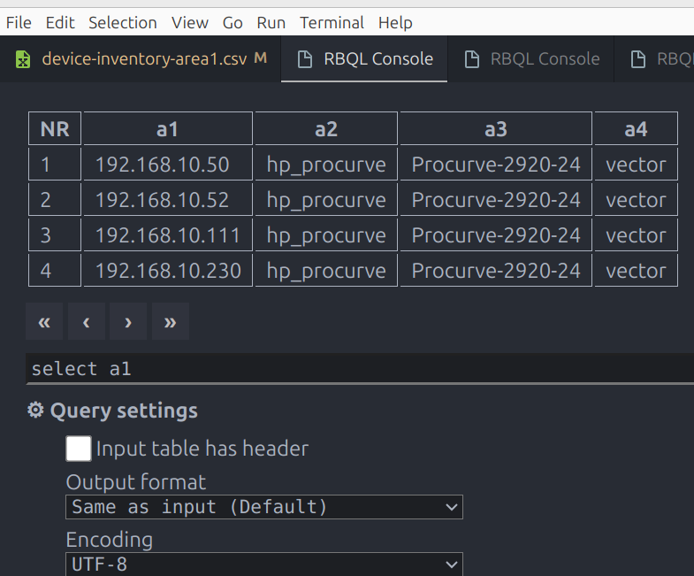
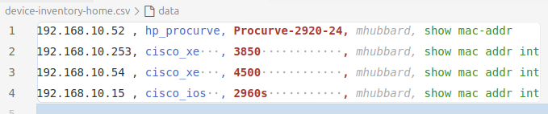
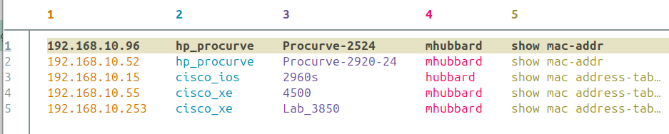
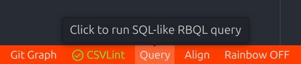
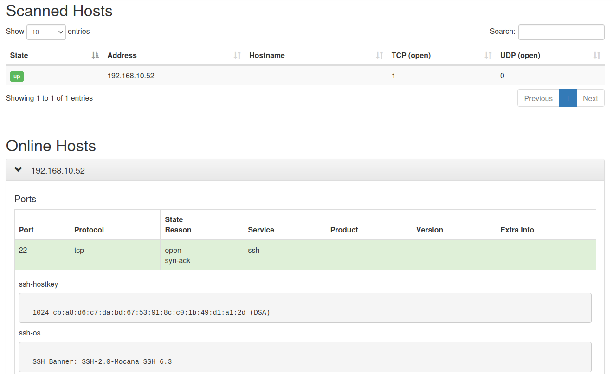

Using the Script
There are a few steps that need to be completed before starting the discovery process:
- Create a device inventory file
- Make changes to the procurve-config-file.txt file (if needed)
- Decide how you want store the password
- Update the mac.txt file to match the format of the switches
Create the device inventory file
You must create a csv file that contains the following:
switch ip
netmiko vendor_id
switch hostname
username
format that the device needs to output mac addresses per interface
The supported Netmiko vendor_ids are:
The format for each line in the device-inventory file is:
ip_address,vendor_id,hostname,user,command to display mac addresses per intf
Here is an example of a device-inventory file:
192.168.10.52,hp_procurve,Procurve-2920-24,mhubbard,show mac-addre
192.168.10.253,cisco_xe,3850,mhubbard,show mac addr int
192.168.10.54,cisco_xe,4500,mhubbard,show mac addr int
192.168.10.15,cisco_ios,2960s,mhubbard,show mac addr int
In this example, there are hp_procurve, cisco_xe and cisco_ios devices. You can have as many devices in the file as you need. I have had as many 50 in one file.
Create one line for every switch that you want to process.
You can use either a spreadsheet program or a text editor to create the inventory file but it must have a ".csv" file extension. If you use vscode, there is a plugin called Rainbow CSV that allows you to work with csv files in vscode. It also allows you to use SQL syntax to query the file. Very nice if the file gets to be long. Below is a screenshot to the Rainbow CSV RBQL Console. RBQL is short for Rainbow Query Language.

Rainbow CSV also has an align feature that makes it easier to read the columns. Here is a screenshot of a device file opened in vs code with Rainbow csv:

Save the file as device-inventory-<site name>.csv in the root of the project folder.
For example,
device-inventory-HQ.csv
There is a sample file named device-inventory-area1.csv in the project. The site name is just a tag so that you can have as many device-inventory files as you need. At a large customer this might be the MDF and then a series of IDFs.
CSVLENS
There is also a great terminal tool called csvlens. It's an open source project on GitHub csvlens. It's cross platform and runs on Mac/Linux/Windows.
Install on Mac/Linux
Homebrew is easiest way to install
brew install csvlens and your are done.
If you don't use homebrew you can go to the releases page, download the tarball and install using:
tar xvf csvlens-x86_64-unknown-linux-gnu.tar.xz
cd csvlens-x86_64-unknown-linux-gnu
sudo mv csvlens /usr/bin
The mv command moves csvlens to `/usr/bin' so that you can call it from anywhere.
The problem with installing csvlens this way is that you don't get automatic updates. This is a very active project and updates usually add nice features. You will have to manually download the tar file and repeat the process.
Version 0.13.0 release notes:
Add --color-columns to display each column in a different color (#39)
Add --prompt to show a custom prompt message in the status bar (#135)
Expose freeze columns option in library usage (#124 by @jqnatividad)
Improve visibility of line numbers and borders
Add aarch64 release targets (#55)
The --color-columns is a nice addition. To view the device-inventory-home.csv file with colored columns use csvlens --no-headers --color-columns device-inventory-home.csv.
Create an alias for csvlens
You can create an alias in your ~/.bashrc or ~/.zshrc file:
Then use csvlens device-inventory-home.csv to get colors and no header.

Install CSVLENS on Windows
winget install --id YS-L.csvlens
It's a little more of a challenge to on Windows to create the alias. You will need to use PowerShell as your terminal and update the profile text file. First, open a powershell terminal. I recommend installing the Windows Terminal so that you can have cmd.exe, PowerShell, and WSL terminals in one place. Then enter notepad $PROFILE to open the PowerShell profile for editing. Paste this into the bottom of the text file:
# Simplified function to run csvlens with specified arguments using @args
function Invoke-CsvLensWithArgs {
csvlens.exe --color-columns --no-headers @args
}
# Alias for the 'Invoke-CsvLensWithArgs' function (explicitly set to Global scope)
Set-Alias -Name cl -Value Invoke-CsvLensWithArgs -Scope Global
Save and close the file. Then back in the PowerShell terminal enter:
This will:
- display the path to the
$PROFILEfile - print the contents of the
$PROFILEfile - reload the profile so that the alias works
One big advantage to using Windows terminal with PowerShell is that it stores the history of your commands in a file. So you can close the terminal but not lose your history. PowerShell also comes with builtin aliases for several Linux commands like:
- cat - The Linux
catcommand to concatenate or display text files. - clear - Clear the screen.
- cp - Linux copy command to copy files.
- echo - Echo text to the screen (stdout in Linux terms)
- ls - Linux
List Filescommand - mkdir - Linux Make Directory command
- mv - Linux move files command
- popd - Linux command to pop to the top level directory off the stack
- pushd - Linux command to push the current directory to the top of the stack
- pwd - Linux
Print Working Directorycommand. Outputs the directory you are in. - rm - Linux
Remove Filescommand
If you are creating bash scripts popd and pushd are useful. Having these aliases built in is great if you work on Mac, Linux and Windows since Mac/Linux share the same commands.
Install Bat on Windows
As long as we are installing cool utilities on Windows we should install bat. Bat is like cat on Linux but works on Windows also.
winget install sharkdp.bat
After that you can do bat device-inventory-home.csv and get a nice formatted, colored output. The advantage to bat over csvlens is that it works with any text file.
Password
Handling credentials is always an area of concern. The script supports two methods:
- Create an environment variable "cyberARK" and save the password to the variable.
- include
-p 1on the command line to be prompted for the password
Neither method is perfect but using either the environment variable or being prompted is more secure than having a csv file with plaintext passwords in it.
Creating an Environment Variable
On Windows you use control panel to create a "user environment variable". You can follow these instructions user environment variables. You have to log out and log in again to make the environment variable active.
Set environment variable on macOS/Linux
From the terminal that you will run the script in export cyberARK=<Password>, for example export cyberARK=Sup3rs3cr3t. You have to do the export in the terminal that the script will be run in. If you are using vscode and debugging in vscode, that means the vscode terminal.
Being prompted for the password
This is easier than setting up environment variable. You simply add -p 1 to the command line.
For example, to run the script for a site named HQ:
python3 config-pull.py -s HQ -p 1
When you press enter, you will see "Input the Password:" on the command line. Enter the password and press [enter]
Update the -config-file.txt file
This file contains all of the show commands that will be sent to the switches. The project includes sample files for hp_procurve, cisco_ios, and cisco_xe switches. The sample files have over 50 commands in them, including many that may not apply to the customer:
- show lacp peer
- show lacp local
- show lacp mad-passthrough
- show dhcp-server binding
- show dhcp-server pool
If you don't need them for a particular customer you can just open the file and delete any that you don't need or add any that you do need. The goal is to have all the data needed to satisfy the Change Request requirements.
The script looks for <vendor-id>-config-file.txt. You have to use that exact format. Since the script supports the following Netmiko vendor_ids:
- hp_procurve
- cisco_ios
- cisco_xe
- cisco_nx
- aruba_cx
The config files will be named:
- hp_procurve-config-file.txt
- cisco_ios-config-file.txt
- cisco_xe-config-file.txt
- cisco_nx-config-file.txt
- aruba_cx-config-file.txt
Warning
On older switches, reading a lot of data can cause the CPU to go to 90% or higher! This will cause issues if OSPF or EIGRP is running and may cause the script to fail with a timeout. If this happens, remove some commands from the config-file and try again.
Pulling the mac address table
For pulling the mac-address table, which most customers want you to do before a cutover, I build an exclude statement using a regex to skip uplink ports. Here is an example for HPE Procurve that doesn't pull mac addresses for ports on modules A and B. These were uplinks on one of the switches that I developed the script on.
show show mac-address | ex "A|B"
In the example, the | symbol means logical OR. This works because the switch displays the mac address in lower case.
show mac-address | ex "A|B"
----------------- ------------------------------- ----
00c0b7-f4b43a C4 1
282986-40a427 H24 1
Notice that port C4 has a lowercase a and b in the address and port H24 has a lowercase a. Since the regex is case sensitive this works.
On a non-modular switch you can't use:
sh mac-address | exclude 24|25
Status and Counters - Port Address Table
MAC Address Port VLAN
------------- ------- ----
00e04c-360348 5 10
Because port 11 has 25 in the mac address
b00cd1-372591 11 10
And was excluded from the output.
Here is a regex that will match only port 24 so that you can exclude port 24.
show mac-address | exclude " [0]*24[ ]+"
Status and Counters - Port Address Table
MAC Address Port VLAN
------------- ------- ----
bc9fe4-c342ca 12 1
00e04c-360348 5 10
You can also use the regex "|" OR symbol:
show mac-address | exclude " [0]*5|24[ ]+"
Status and Counters - Port Address Table
MAC Address Port VLAN
------------- ------- ----
bc9fe4-c342ca 12 1
Notice that if you wanted to exclude port 1, 2, 3, or 4, you would add a space after the number. Otherwise the regex would match 11, 21, 31, 41.
Or just forget the regex! The goal is to not include mac-addresses from uplinks and system MACs. But you would need to know what ports to exclude ahead of time. You can just dump the whole table. The only time I have seen this cause a problem was on a Cisco 6509 core that had six 48 port blades and several IDFs connected to the fiber card. There are a lot of mac in that table. The script worked but it took a while!
I use this site to test/develop regex expressions.
Cisco IOS mac address table exclude
The Cisco IOS has this regex
show mac address-table | ex STATIC|Po|1/0/49
This excludes ports with:
- STATIC
- Port Channels
- interface 1/0/49
Or just forget the regex! The goal is to not include mac-addresses from uplinks and system MACs. But you would need to know what ports to exclude ahead of time. You can just dump the whole table. The only time I have seen this cause a problem was on a Cisco 6509 core that had six 48 port blades and several IDFs connected to the fiber card. There are a lot of mac in that table. The script worked but it took a while!
Cisco XE mac address table exclude
show mac address-table | ex Po|ffff.ffff.ffff|static
Again, the goal is to exclude uplinks.
Run the discovery script
Now that the project is set up and the inventory file is created, you can run the script. Make sure you are in the Discovery directory and run:
or
To activate the the virtual environment.
What options are available
You can run the script with -h to get help:
python3 procurve_Config_pull.py -h
usage: procurve_Config_pull.py [-h] [-e EVENT] [-l LOGGING] [-p PASSWORD] [-s SITE] [-t TIMEOUT]
-s site, -l 1 create log.txt, -p 1 prompt for password, -t 1-9 timeout, -e W,I,M,D,E to pull logs
options:
-h, --help show this help message and exit
-e EVENT, --event EVENT
-e W,I,M,D,E to pull switch logs
-l LOGGING, --logging LOGGING
use -l 1 to enable ssh logging
-p PASSWORD, --password PASSWORD
use -p 1 to be prompted for password
-s SITE, --site SITE Site name - ex. HQ
-t TIMEOUT, --timeout TIMEOUT
use -t 1-9 to set timeout
(Discovery)
What do the arguments do
The only required argument is -s site. This references the device-inventory file.
Collecting switch logs
Reviewing switch logs before a cut over can help you understand the health of the network. For example, you may find OSPF neighbors bouncing or an STP issue. Obviously if the network is large you can't review every switch in detail. But looking at key switches such as cores and distribution is worth a few minutes.
Using grep you can parse hundreds of logs in a matter of seconds. The log files are saved to the CR-data folder. If you cd to the CR-data folder you can run this grep command to find lacp issues from any switch:
grep -Eir 'Blocked by LACP'
test-CL-2930-48-1-log-1.txt:I 02/02/24 17:20:55 00435 ports: port 22 is Blocked by LACP
Or check STP:
grep -Eir 'stp:'
Procurve-2920-24-CR-data.txt:I 01/10/24 19:01:57 03816 stp: VLAN 850 - Root changed from 32768: (this device)
I can't go into everything you should look for, but with some practice you will look like a genius finding intermittent issues on the customer's network!
Procurve logs
The procurve switches allow you to pull five different types of logs:
- Warning (W) - This log contains warning messages
- Informational (I) - This log can grow very large and may need a large timeout value. If you have a lot of switches to discovery and they have large informational logs you may want to skip them.
- Major (M) - This log contains major messages
- Debug (D) - This log contains debug messages
- Error (E) - This log contains error messages
If you want to pull logs from the switch add -e and the type of log. You can collect 1 or all 5. Separate the values with a comma. For example:
-e W,I,M,D,E
If you use -e W the script will send show logging -r -W
The reason I added the ability to collect individual logs is that I had time out issues sending show logging -r because the Procurve switches have a lot of storage for logs. This happened at a customer with large a stack of 2930s and an intermittent connectivity issue.
But, it turned out to be useful because informational logs are a lot of noise. Being able to narrow down and look at just Warning or Major logs is nice.
Cisco Logs
Cisco doesn't support all the options that the procurve does. If you want to collect logs on a cisco use -e 1. This will send show logging to the switch.
I haven't run into the timeout issue on Cisco switches. I think this is because by default Cisco logging is set to only 4096 and most engineers don't change it.
Using grep you can parse hundreds of logs in a matter of seconds. The log files are saved to the CR-data folder. If you cd to the CR-data folder you can run this grep command to find stacking messages from any switch:
grep -Eir 'stack_mgr:'
Lab_3850-log-1.txt:*Jul 13 19:33:52.175: %STACKMGR-4-SWITCH_ADDED: Switch 2 R0/0: stack_mgr: Switch 2 has been added to the stack.
Find connected ports
Customers often ask how many active ports are on a switch. This grep statement will return the port from the show interface status | i connected command:
grep "connected" JC-MDF-4-CR-data.txt | awk '{print $1}' | sort | uniq | sort -t '/' -k1,1 -k2,2n -k3,3n
Output
📋 Explanation of the Command
- grep "connected" JC-MDF-4-CR-data.txt: This filters lines containing "connected" from the file.
- awk '{print $1}': This extracts the first column (the interface names).
- sort: This sorts the interface names, ensuring that duplicates are adjacent.
- uniq -c: This counts the occurrences of each unique interface name.
- sort -t '/' -k1,1 -k2,2n -k3,3n: This sorts the counted output correctly based on the interface name structure.
If you want to return the entire line from the show interface status | i connected command use this grep:
grep "connected" JC-MDF-4-CR-data.txt | sort | uniq | sort -t '/' -k1,1 -k2,2n -k3,3n
Output
Gi1/0/1 < Uplink to SonicW connected 777 a-full a-1000 10/100/1000BaseTX
Gi1/0/2 < Uplink to SonicW connected 20 a-full a-1000 10/100/1000BaseTX
Gi1/0/3 < Uplink to SonicW connected 100 a-full a-1000 10/100/1000BaseTX
Gi1/0/5 < Uplink to SonicW connected 778 a-full a-1000 10/100/1000BaseTX
Gi1/0/9 < Voice Server > connected 90 a-full a-1000 10/100/1000BaseTX
Gi1/0/10 < Voice Server > connected 90 a-full a-1000 10/100/1000BaseTX
Gi1/0/12 < Safelok SRV 10.1 connected 100 a-full a-1000 10/100/1000BaseTX
Gi1/0/16 < BacTalk Port > connected 778 a-half a-100 10/100/1000BaseTX
Gi1/0/17 < Voice Network > connected 90 a-full a-1000 10/100/1000BaseTX
Gi1/0/21 < HIS > connected 780 a-full a-1000 10/100/1000BaseTX
Gi1/0/25 < Uplink to 4500x connected trunk a-full a-1000 1000BaseLX SFP
Gi1/0/25 < Uplink to 4500x connected trunk a-full a-1000 1000BaseLX SFP
Setting the Password
If you want to be prompted for a password add -p 1. If you don't use -p 1 you must set an environment variable cyberARK with the password. That is covered above in the "password" section.
SSH Logging
If you want to enable ssh logging add -l 1. You would do that to troubleshoot if you are getting "time out" errors when the script tries to connect to a switch. It does not log anything from the switch.
Timeout
You can modify the timeout value using -t. Note: the number sets the timeout value in 100s of seconds. If you use -t 2 it will wait up to 200 seconds for the operation to complete.
Argument Examples
The minimum is to use -s for the site:
python3 config-pull.py -s HQ
To include the Warning log from HPE Procurve switches:
python3 config-pull.py -s HQ -e W
To include all logs and set timeout to 2:
python3 config-pull.py -s HQ -e W,I,M,D,E -t 2
To be prompted for a password:
python3 config-pull.py -s HQ -p 1
Note
you may have to use python instead of python3 depending on your OS.
I recommend running the script on one network switch the first time instead of a long list of switches. That will let you see the content of the show commands and make changes if needed before spending time running it on a long list of switches.
The files will be saved in the following directories:
- CR-data - files that are ready for viewing
- Interface - files that need further processing
- Failure-Logs
- port-maps - files for creating port maps
- Running - The "show running structured" output for each switch
If you are having timeout or authentication issues, enable logging. Here is a sample output of the log.txt file that netmiko creates:
DEBUG:paramiko.transport:starting thread (client mode): 0xb4b346d0
DEBUG:paramiko.transport:Local version/idstring: SSH-2.0-paramiko_3.4.0
DEBUG:paramiko.transport:Remote version/idstring: SSH-2.0-Mocana SSH 6.3
INFO:paramiko.transport:Connected (version 2.0, client Mocana)
DEBUG:paramiko.transport:=== Key exchange possibilities ===
DEBUG:paramiko.transport:kex algos: ecdh-sha2-nistp256, ecdh-sha2-nistp384, ecdh-sha2-nistp521, diffie-hellman-group-exchange-sha256, diffie-hellman-group14-sha1
DEBUG:paramiko.transport:server key: rsa-sha2-512, rsa-sha2-256, ssh-rsa
DEBUG:paramiko.transport:client encrypt: aes256-ctr, rijndael-cbc@lysator.liu.se, aes192-ctr, aes128-ctr
DEBUG:paramiko.transport:server encrypt: aes256-ctr, rijndael-cbc@lysator.liu.se, aes192-ctr, aes128-ctr
DEBUG:paramiko.transport:client mac: hmac-sha1-96, hmac-sha1
DEBUG:paramiko.transport:server mac: hmac-sha1-96, hmac-sha1
DEBUG:paramiko.transport:client compress: none
DEBUG:paramiko.transport:server compress: none
DEBUG:paramiko.transport:client lang: <none>
DEBUG:paramiko.transport:server lang: <none>
DEBUG:paramiko.transport:kex follows: False
DEBUG:paramiko.transport:=== Key exchange agreements ===
DEBUG:paramiko.transport:Kex: ecdh-sha2-nistp256
DEBUG:paramiko.transport:HostKey: rsa-sha2-512
DEBUG:paramiko.transport:Cipher: aes128-ctr
DEBUG:paramiko.transport:MAC: hmac-sha1
DEBUG:paramiko.transport:Compression: none
DEBUG:paramiko.transport:=== End of kex handshake ===
DEBUG:paramiko.transport:kex engine KexNistp256 specified hash_algo <built-in function openssl_sha256>
DEBUG:paramiko.transport:Switch to new keys ...
DEBUG:paramiko.transport:Adding ssh-rsa host key for 10.112.254.60: b'47708eeea6cbecf20b5916d675feca3d'
DEBUG:paramiko.transport:userauth is OK
INFO:paramiko.transport:Auth banner: b'******************************************************************************\nThis system is the property of Michael Hubbard.\n\nUNAUTHORIZED ACCESS TO THIS DEVICE IS PROHIBITED.\n\nYou must have explicit permission to access this device.\n\nAll activities performed on this device are logged.\nAny violations of access policy will result in disciplinary action.\n****************************************************************************** \n\n'
INFO:paramiko.transport:Authentication (password) successful!
Here is a sample output from running the script:
config_pull.py -s area1 -e W
-------------------------------------------------
Reading devices from: device-inventory-area1.csv
----------------------------------------------------------
01/21/2024, 19:02:50 Connecting to switch Procurve-2920-24
----------------------------------------------------------
Exec time: 0:00:01.279461
Could not connect to Procurve-2920-24 at 192.168.10.50. The Credentials failed. Remove it from the device inventory file
----------------------------------------------------------
01/21/2024, 19:02:51 Connecting to switch Procurve-2920-48
----------------------------------------------------------
HP-2920-24G-PoEP#
--------------------------------------------------------
processing procurve-config-file.txt for Procurve-2920-48
--------------------------------------------------------
processing show logging -W for Procurve-2920-48
--------------------------------------------------------
Writing show logging -W commands to /home/mhubbard/04_Tools/Discovery/CR-data/Procurve-2920-48-log-W.txt
--------------------------------------------------------
collecting show interface for Procurve-2920-48
--------------------------------------------------------
collecting show system for Procurve-2920-48
--------------------------------------------------------
collecting show cdp detail for Procurve-2920-48
--------------------------------------------------------
collecting show interfaces brief for Procurve-2920-48
--------------------------------------------------------
collecting show lldp neighbors for Procurve-2920-48
--------------------------------------------------------
collecting show mac address for Procurve-2920-48
--------------------------------------------------------
collecting show arp for Procurve-2920-48
--------------------------------------------------------
Collecting show running-config from Procurve-2920-48
--------------------------------------------------------
Writing show commands to /home/mhubbard/04_Tools/Discovery/CR-data/Procurve-2920-48-CR-data.txt
-------------------------------------------------
Writing MAC addresses to /home/mhubbard/04_Tools/Discovery/port-maps/data/Procurve-2920-48-mac-address.txt
-------------------------------------------------
Writing ARP data to /home/mhubbard/04_Tools/Discovery/port-maps/data/Procurve-2920-48-arp.txt
-------------------------------------------------
Writing show run to /home/mhubbard/04_Tools/Discovery/port-maps/data/Procurve-2920-48-arp.txt
-------------------------------------------------
Writing interfaces json data to /home/mhubbard/04_Tools/Discovery/Interface/Procurve-2920-48-system.txt
-------------------------------------------------
Writing interfaces json data to /home/mhubbard/04_Tools/Discovery/Interface/Procurve-2920-48-interface.txt
-------------------------------------------------
Writing interfaces brief data to /home/mhubbard/04_Tools/Discovery/Interface/Procurve-2920-48-int_br.txt
-------------------------------------------------
Writing cdp neighbor data to /home/mhubbard/04_Tools/Discovery/Interface/Procurve-2920-48-cdp.txt
-------------------------------------------------
Writing show lldp data to /home/mhubbard/04_Tools/Discovery/Interface/Procurve-2920-48-lldp.txt
-------------------------------------------------------
Successfully created config files for Procurve-2920-48
-------------------------------------------------------
Data collection is complete.
Total running time: 0.0 Hours 1.0 Minutes 44.67 Seconds
Failure to connect to a switch
If a switch does not respond, the credentials are incorrect, or the SSH version is 1, a message will be printed to the console, a log file with the hostname and a reason code is written to hte Failure-log folder and the script will continue processing the next switch.
It's really disruptive to the discovery process if the script cannot connect to multiple switches. That means you have to fix the problem, create a new inventory file with just the failed switches, then rerun the script on the subset. I was doing a discovery at a customer with over 240 switches. They had a lot of configuration issues and username/password variations. I ended up with around 40 switches that I couldn't log into.
Use nmap to verify switches are up
I recommend saving the switch IP addresses in a plain text file, one per line, and then using nmap to verify that ssh is working.
THe process
Create a new text file named ip.txt. If you are using vs code and the Rainbow csv extension you can simply run a query on the device-inventory file:
select a1
That will return all the IP addresses.
At the bottom of vs code, click query.

When the query page opens, enter select a1 and click run.
The query will return a list of IP addresses, 1 per line. Select all lines and paste them into ip.txt.
Run nmap with these arguments:
nmap -v -p 22 -iL ip.txt --reason -oN ip-dead.txt
This tells nmap to use ip.txt for the target IP addresses, include the reason and save the output to ip-dead.txt.
In this example only 3 devices are working:
Nmap done at Sun Jan 7 20:05:46 2024 -- 4 IP addresses (3 hosts up) scanned
If you don't get 100%, open ip-dead.txt and search for "down".
Use nmap to verify the credentials
There isn't a simple way to verify that the credentials will work. If you have permission to run the nmap ssh-brute script you can verify using:
nmap -p 22 --script ssh-brute --script-args userdb=user.lst,passdb=pass.lst -iL ip.txt
Put your username in user.lst and your password in pass.lst.
You will get back a report for each device:
Nmap scan report for 192.168.10.52
Host is up (0.0033s latency).
PORT STATE SERVICE
22/tcp open ssh
| ssh-brute:
| Accounts:
| sw_admin:Sup3rS3cr3t - Valid credentials
|_ Statistics: Performed 2 guesses in 2 seconds, average tps: 1.0
Nmap scan report for 192.168.10.111
Host is up (0.0028s latency).
PORT STATE SERVICE
22/tcp open ssh
| ssh-brute:
| Accounts: No valid accounts found
|_ Statistics: Performed 2 guesses in 4 seconds, average tps: 0.5
Then use grep -Eir -b6 "No valid" accounts.txt to find the devices with no valid accounts.
Grep Arguments:
- E - extended
- i - case-insensitive
- r - recursive
- -b6 - show 6 lines before the match
Building a list of switches
Not all customers will have a clean list of switch IP addresses and host names. If there is a management network you may be able to look at the arp table and pull out the switches. As a last resort you can use the following process to build a list of switches.
Run this nmap command to find devices with ssh and snmp open. Most devices that have ssh and snmp open are switches. You may have to do some additional filtering.
sudo nmap -sU -sS -T4 -sC -p U:161,T:22 -oA procurve-scan -n -Pn --open --stylesheet https://raw.githubusercontent.com/honze-net/nmap-bootstrap-xsl/master/nmap-bootstrap.xsl <target ips>
Note
The stylesheet is from honze-net-nmap-bootstrap-xsl. This is a repository for creating nmap reports. Well worth a look.
!!! warning Failed to open normal output file procurve-scan.nmap for writing: Permission denied (13)
If you installed nmap using a snap on Ubuntu you will not be able to write a file as root to a folder you own.
If you receive the Permission denied (13) message, add /tmp/ to the filename:
sudo nmap -sU -sS -T4 -sC -p U:161,T:22 -oA /tmp/procurve-scan -n -Pn --open --stylesheet https://raw.githubusercontent.com/honze-net/nmap-bootstrap-xsl/master/nmap-bootstrap.xsl <target ips>
The -oA switch-scan argument will create the following files:
- procurve-scan.xml - a standard XML file with the xsl link embedded
- procurve-scan.nmap - an nmap format file
- procurve-scan.gnmap - a greppable nmap format file
The files will be owned by the root account since we need sudo for the UDP scan. Here are the permissions:
$ ls -l procurve-scan*
-rw-r--r-- 1 root root 477 2024-01-14 17:13 procurve-scan.gnmap
-rw-r--r-- 1 root root 926 2024-01-14 17:13 procurve-scan.nmap
-rw-r--r-- 1 root root 3.6K 2024-01-14 17:13 procurve-scan.xml
Run the following to take ownership of the files:
sudo chown $USER procurve-scan*
The results:
ls -l procurve-scan*
-rw-r--r-- 1 mhubbard root 477 2024-01-14 17:13 procurve-scan.gnmap
-rw-r--r-- 1 mhubbard root 926 2024-01-14 17:13 procurve-scan.nmap
-rw-r--r-- 1 mhubbard root 3.6K 2024-01-14 17:13 procurve-scan.xml
The output will look something like this:
sudo nmap -sU -sS -T4 -sC -p U:161,T:22 -oA procurve-scan -n -Pn --open --stylesheet [nmap-bootstrap.xsl](https://raw.githubusercontent.com/honze-net/nmap-bootstrap-xsl/master/nmap-bootstrap.xsl) 192.168.10.52
Host discovery disabled (-Pn). All addresses will be marked 'up' and scan times will be slower.
Starting Nmap 7.91 ( https://nmap.org ) at 2024-01-14 17:09 PST
Nmap scan report for 192.168.10.52
Host is up (0.0032s latency).
PORT STATE SERVICE
22/tcp open ssh
| ssh-hostkey:
|_ 1024 cb:a8:d6:c7:da:bd:67:53:91:8c:c0:1b:49:d1:a1:2d (DSA)
| ssh-os:
|_ SSH Banner: SSH-2.0-Mocana SSH 6.3\x0D
161/udp open|filtered snmp
| snmp-info:
| enterprise: Hewlett-Packard
| engineIDFormat: unknown
| engineIDData: 000098f2b3fe8880
| snmpEngineBoots: 108
|_ snmpEngineTime: 5h40m26s
MAC Address: 98:F2:B3:FE:88:80 (Hewlett Packard Enterprise)
Host script results:
|_smbv2-enabled: ERROR: Script execution failed (use -d to debug)
Nmap done: 1 IP address (1 host up) scanned in 15.03 seconds
The "SSH Banner: SSH-2.0-Mocana SSH 6.3" is the ssh server that is running on the procurve switch. Over the years HPE has used different ssh servers but this banner will help identify Procurve switches.
Let's look at the contents of the procurve-scan.gnmap file:
# Nmap 7.91 scan initiated Sun Jan 14 17:13:39 2024 as: nmap -sU -sS -T4 -sC -p U:161,T:22 -oA procurve-scan -n -Pn --open --stylesheet https://raw.githubusercontent.com/honze-net/nmap-bootstrap-xsl/master/nmap-bootstrap.xsl 192.168.10.52
Host: 192.168.10.52 () Status: Up
Host: 192.168.10.52 () Ports: 22/open/tcp//ssh///, 161/open|filtered/udp//snmp//Hewlett-Packard SNMPv3 server/
# Nmap done at Sun Jan 14 17:13:54 2024 -- 1 IP address (1 host up) scanned in 15.09 seconds
If you are on Mac/Linux/Windows WSL or have git bash (or MobaXterm) installed on Windows you can use grep to pull out a list of the switches from procurve-scan.gnmap file. Use the following grep/awk command:
bash
grep -Eir "22/open/tcp//ssh///, 161/open|filtered/udp//snmp//" procurve.gnmap | awk '{ print $2 }'
192.168.10.52
The grep found just the "ssh, snmp" string and awk printed the data in column 2.
Review the bootstrap report
The "stylesheet" argument creates an xsl file to format the XML file that the script creates. You will be able to right-click on the xml file and open it in Firefox to see a nicely formatted report. This isn't required, it's just nice extra and you can give it the customer as documentation. Here is a simple example from my home lab:

Opening the report in a Chromium based browser
If you want to open the report in a Chromium browser you will need to do the following:
- Open this page in Chrome/Edge
- Paste the text from procurve-scan.xml into "Option 1: Copy-paste your XML document here"
- Open nmap-bootstrap-xsl in a text editor and on line 8, delete -
doctype-system="about:legacy-compat" - Paste the text into "Option 2: Option 1: Copy-paste your XSL document here"
- click
Transform XML - Save the new text as procurve-scan.html. You lose a little bit of the report but it's still usable.
Alternative ways to view the report in a Chromium browser
The URL restriction occurs because the xsl file comes from an https server (github) and the file is on disk. If you use "settings, Developer tools, console", you will see this message:
procurve-scan.xml:3 Unsafe attempt to load URL
https://raw.githubusercontent.com/honze-net/nmap-bootstrap-xsl/master/nmap-bootstrap.xsl
from frame with URL
file:///home/mhubbard/04_Tools/Discovery/procurve-scan.xml.
'file:' URLs are treated as unique security origins.
Use Chrome or edge browser with the allow --allow-file-access-from-files flag
Chromium based browsers provide a flag to allow local file access. This is a quick way to view the report. But keep in mind that there is a security risk if you don't close the browser after reviewing the report because it will open files without a warning.
On Linux
Navigate to the Chrome folder. On a debian based system this is /opt/google/chrome. Then start chrome using the following command:
Now you can open procurve.html in Chrome and view the report. If you use this feature often, you can create an alias in the ~/.zshrc file
# start chrome and allow local file read
alias chrome-local='cd /opt/google/chrome;./chrome --allow-file-access-from-files'
On Windows
You can copy this Chrome shortcut to the desktop and add the flag to the "Target" section:
"C:\Program Files\Google\Chrome\Application\chrome.exe" --allow-file-access-from-files
Use the new shortcut to open procurve.html in chrome and view the report. Again, close the browser after you are finished with the report to eliminate the security risk.
Use Firefox
To use firefox:
Type "about:config" in the Firefox address bar
Search for "security.fileuri.strict_origin_policy"
Change the setting to "false"
Now you can open procurve.html in Firefox and view the report. Don't forget to set security.fileuri.strict_origin_policy back to false when you are done.
Use a local http server
You can use the xsl file, nmap-bootstrap.xsl, that comes from cloning the repository. The drawback to this is that if you want to share the report, you have to include the xsl file.
Change the nmap command to:
nmap -sU -sS -T4 -sC -p U:161,T:22 -oA procurve-scan -n -Pn --open --stylesheet nmap-bootstrap.xsl 192.168.10.52
Now spin up an http server using python:
python3 -m http.server 8000
Open a Chromium based browser and enter:
http://localhost:8000/procurve-scan.xml
The report will open and not be a limited version.
Learning to use the python http server is a good skill. For example, if you have Aruba APs running in IAP mode and there are a mix of models you have to use http to upgrade them. This method works great on a laptop.
References
- XSL Transformer - XSLT
- Restrictions on File Urls
- Transform XML+XSLT to plain html so that it loads without blocking
- Enabling Internet Explorer Mode in Microsoft Edge
- nmap-bootstrap-xsl
Emoji codes used in the panel function
If you want to expand on the script or change the emojis:
Emoji Codes for Status Panels
| Purpose | Emoji | Unicode Code | Description |
|---|---|---|---|
| Success | ✅ | \u2705 |
Checkmark |
| Error / Failure | ❌ | \u274C |
Cross mark |
| Warning | ⚠️ | \u26A0\uFE0F |
Warning sign |
| Info / Notice | ℹ️ | \u2139\uFE0F |
Info symbol |
| Timeout / Wait | ⏱️ | \u23F1\uFE0F |
Stopwatch |
| Processing / Running | 🔄 | \u1F501 |
Clockwise arrows |
| Connecting | 🔌 | \u1F50C |
Plug |
| Save / Write | 💾 | \u1F4BE |
Floppy disk |
| Search / Discovery | 🔍 | \u1F50D |
Magnifying glass |
| Network | 🌐 | \u1F310 |
Globe |
| Firewall / Security | 🔥 | \u1F525 |
Flame |
| DNS / Naming | 🏷️ | \u1F3F7\uFE0F |
Label |
| System Boot / Start | 🚀 | \u1F680 |
Rocket |
| Power Off / Shutdown | ⏻ | \u23FB |
Power symbol |
| Build / Compile | 🛠️ | \u1F6E0\uFE0F |
Wrench and hammer |